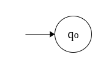
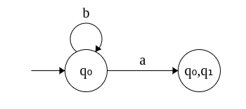
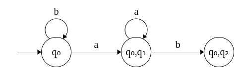
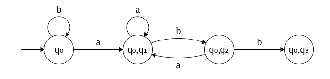
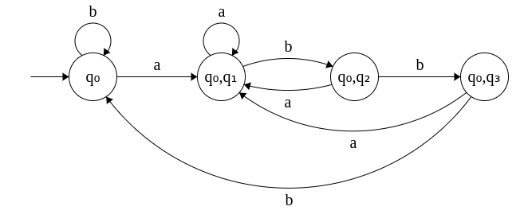
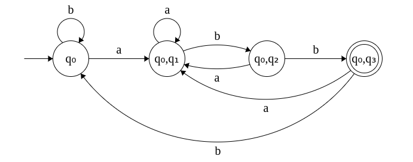
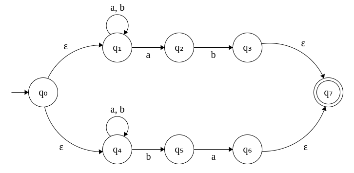
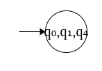
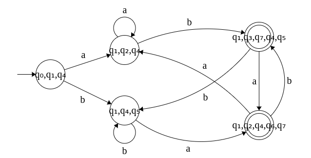

| Prev | Next |
NFA - DFA Equivalence
In principle, every NFA can be turned into an equivalent DFA. The basic idea is that when a transition results in a set of states, we treat the set as one state in the equivalent DFA.
Lets work this out for the above example. We will systematically uncover new states and transitions from the NFA and add them to the DFA.
- Start state = q0 
- δ(q0, a) = {q0, q1}
δ(q0, b) = q0.

- δ({q0, q1}, a) = δ(q0, a) U
δ(q1, a) = {q0, q1} U φ = {q0, q1}
δ({q0, q1}, b) = δ(q0, b) U δ(q1, b) = {q0} U {q2} = {q0, q2}

- δ({q0, q2}, a) = δ(q0, a) U
δ(q2, a) = {q0, q1} U φ = {q0, q1}
δ({q0, q1}, b) = δ(q0, b) U δ(q2, b) = {q0} U {q3} = {q0, q3}

- δ({q0, q3}, a) = δ(q0, a) U
δ(q3, a) = {q0, q1} U φ = {q0, q1}
δ({q0, q3}, b) = δ(q0, b) U δ(q3, b) = {q0} U φ = q0

- What is the final state of the equivalent DFA?
Since q3 is the final state in the original NFA, the states which contain q3 in the equivalent DFA are the final states. In this example, it is {q0, q3}
Can you now the see the similarity between this against the DFA that was designed directly?
How many states will the equivalent DFA have at the maximum?
2n where n is the number of states in the original NFA. This is so, because the equivalent DFA may contain, at worst, every combination of the states of the original NFA.
{
φ,
{q0}, {q1}, {q2}, {q3},
{q0, q1}, {q0, q2}, {q0, q3},
{q1, q2}, {q1, q3}, {q2, q3},
{q0, q1, q2}, {q0, q1, q3},
{q1, q2, q3},
{q0, q1, q2, q3}
}
Convert the NFAs obtained in the previous page to their equivalent DFAs.
2. NFA that accepts strings that does not contain abb. Σ = {a, b}
This is left as exercise.
3. NFA that accepts strings that starts with two a's and ends with two a's. Σ = {a, b}
Try on your own first. Check here for the NFA.
{kind=link}
4. NFA that accepts strings that end with "ab" or "ba". Σ = {a, b}
This is left as exercise.
5. NFA that accepts strings that starts and ends with different symbols Σ = {a, b}
This is left as an exercise.
ε-NFA to DFA
The next question is: can we convert ε-NFA to an equivalent DFA?
Yes. It is possible. This is shown for the Example 4A. The problem and the ε-NFA obtained are given below.
4A. ε-NFA that accepts strings that end with "ab" or "ba". Σ = {a, b}
Step 1: Start state = {q0, q1, q4}, since ε transitions from q0 leads to q1 and q4 and can be combined.
Note that whichever state contains q0 will also include q1 and q4 since ε-transitions are possible to these two states in the original ε-NFA.
Step 2: Transitions from the start state
δ({q0, q1, q4}, a) = δ(q0, a) U δ(q1, a) U δ(q4, a) = φ U {q1, q2} U {q4} = {q1, q2, q4}
δ({q0, q1, q4}, b) = δ(q0, b) U δ(q1, b) U δ(q4, b) = φ U {q1} U {q4, q5} = {q1, q4, q5}
Step 3: Transitions from state {q1, q2, q4}
δ({q1, q2, q4}, a) = δ(q1, a) U δ(q2, a) U δ(q4, a) = {q1, q2} U φ U {q4} = {q1, q2, q4}
δ({q1, q2, q4}, b) = δ(q1, b) U δ(q2, b) U δ(q4, b) = φ U {q1} U {q3, q7} U {q4, q5} = {q1, q3 q7, q4, q5}
Note: Whichever state contains q3 will also include q7 since ε-transition to q7 is possible in the original ε-NFA.
Step 4: Transitions from state {q1, q4, q5}
δ({q1, q4, q5}, a) = δ(q1, a) U δ(q4, a) U δ(q5, a) = {q1, q2} U {q4} U {q5, q7} = {q1, q2, q4, q5, q7}
δ({q1, q4, q5}, b) = δ(q1, b) U δ(q4, b) U δ(q5, b) = {q1} U {q4, q5} U φ = {q1, q4, q5}
Note: Whichever state contains q6 will also include q7 since ε-transition to q7 is possible in the original ε-NFA.
Steps 5 and 6 Transitions from {q1, q3 q7, q4, q5} and {q1, q2, q4, q5, q7} can be computed in a similar fashion. 
5A. ε-NFA that accepts strings that starts and ends with different symbols Σ = {a, b}
This can be done in a similar fashion and is left as an exercise.
ε-NFA is used in converting regular expressions (next topic) to DFA as an intermediate step.